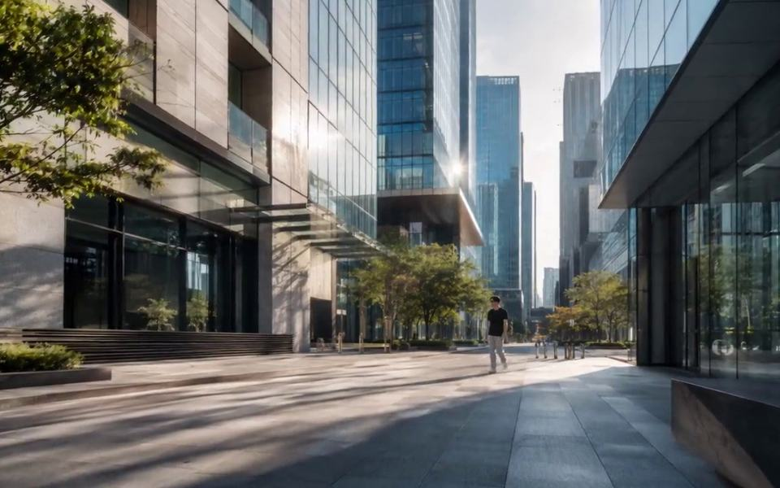

真实墨镜产品 + AI 场景生成 + 光影合成，突出潮流质感与产品调性，最终交付 20 秒产品广告成片。个人 AI 概念广告创作。
这支广告的重点不是「单纯 AI 生成」，而是证明产品视觉合成能力：以真实墨镜产品图作为基底，用 AI 生成匹配的潮流场景，再逐帧校准光影与透视，让产品自然落入环境，而不是悬浮贴图。
叙事围绕「潮流态度」展开——从冷调城市光线、镜面反射细节到产品特写，把产品调性翻译成可感知的视觉情绪。
最终交付一支 20 秒产品广告成片：真实墨镜在 AI 生成的冷调潮流场景中完成产品叙事，光影一致、边缘干净，可直接用于产品种草与品牌投放。
